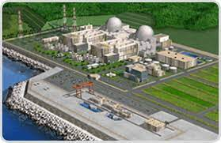

원자력발전소 설계기술 자립을 위해 다각적인 노력을 기울여온 우리나라는 1986년 3월 ‘원전건설 기술자립계획’을 수립하고, 1995년까지 한빛 3,4호기 건설을 통해 원전기술 자립을 달성한다는 목표아래 한국전력기술을 종합설계와 원자로계통설계의 사업자로 선정하였습니다.
한빛 3,4호기의 노형은 미국 ABB-CE의 System 80 노형을 기준 모델로 하였으며, 1975년 설립 이후 한국전력기술이 축적해온 경험기술과 최신의 설계기술이 적용되었습니다. 한빛 3,4호기는 1995년 3월 31일과 1996년 1월 1일에 각각 준공되어 설계기술자립율을 95% 이상 달성한 것은 물론, 상업운전 이후 기대 이상의 운영실적을 거둠으로써 국제적인 호평과 함께 명실상부한 독자적인 원전 설계기술역량을 갖춘 국가로 부상하게 되었습니다.
이후 한빛 3,4호기를 참조발전소로 하여 건설된 한울 3,4호기가 1998년 8월과 1999년 12월에 각각 상업운전을 개시함으로써 마침내 한국표준원전(KSNP : Korean Standard Nuclear Power Plant)이라는 고유의 원전 브랜드가 그 빛을 보게 되었습니다.
한국표준원전은 한국의 표준형 원전이라는 의미로 개발 당시에는 KSNP라 명명했으나, 2005년 원전의 해외수출을 위해 범 국제 시장용 브랜드가 필요하다는 인식하에 ‘최적의 경수로’라는 의미를 담은 OPR1000(Optimized Power Reactor)으로 명칭을 변경하였습니다. OPR1000은 한울 5,6, 한빛 5,6 등 총 6기의 반복 설계를 통해 선행 호기의 제반 문제점을 지속적으로 개선하여 반영함으로써 최적의 경제성과 안전성을 갖추었습니다. 이에 따라 국제원자력기구(IAEA)의 원전 전문가들은 OPR1000을 두고 ‘세계에서 건설중인 1000MW급 원전 중에서 가장 안전한 원전’이라는 찬사에 가까운 평가를 내렸습니다.
이후 OPR1000은 반복건설에 의한 부분적인 설계개선을 탈피하여 종합적인 설계개선을 실시하여 기술성과 경제성을 한층 향상시키고, 국제경쟁력을 확보한 개선형 OPR1000(Improved OPR1000)으로 새롭게 탄생하였습니다. 개선형 OPR1000이 신고리 1,2호기, 신월성 1,2호기 등에 적용됨으로써 한국전력기술은 OPR1000 계열의 원전 12기에 대한 설계 실적을 확보하게 되었습니다. 또한 OPR1000은 북한 경수로사업(KEDO원전 사업)의 노형으로 채택됨으로써 우리나라 원전의 첫 국제무대 진출이라는 기록을 갖게되었습니다. 이처럼 한국전력기술이 설계한 OPR1000을 통해 우리나라는 독자적인 원전 모델을 구축한 원전 강국으로 부상하게 되었습니다.
